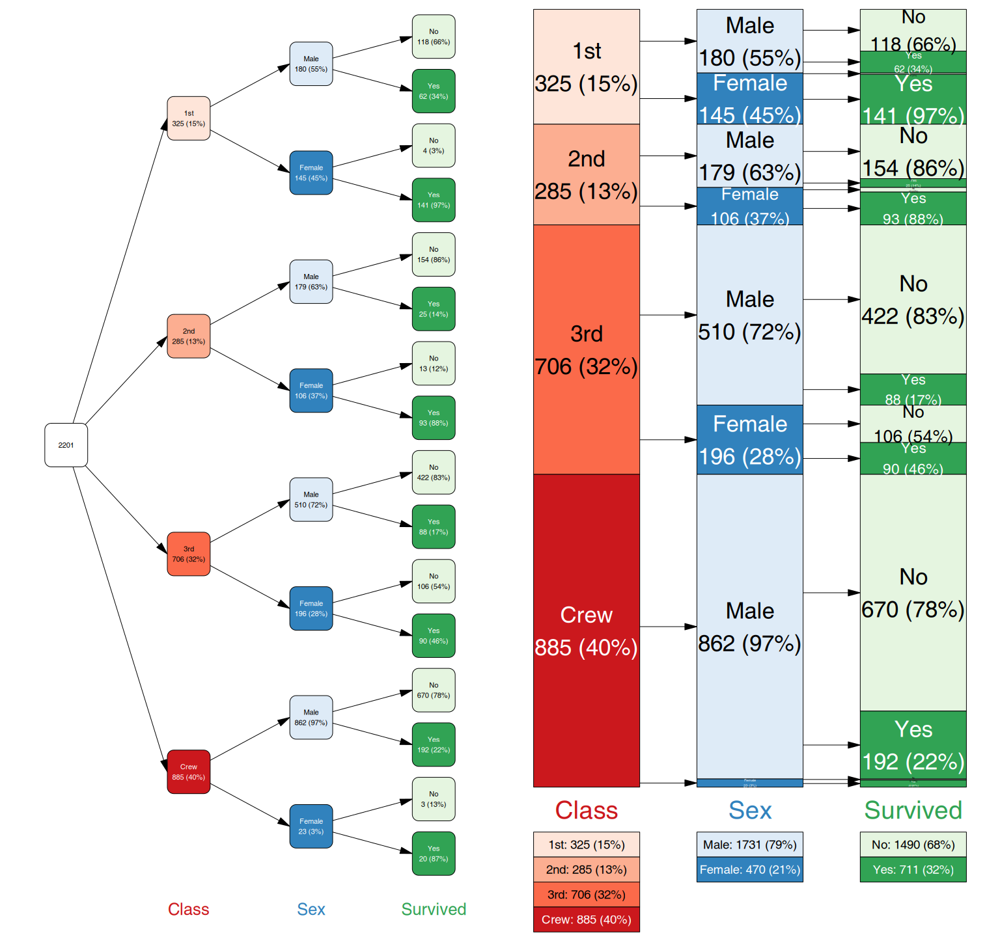
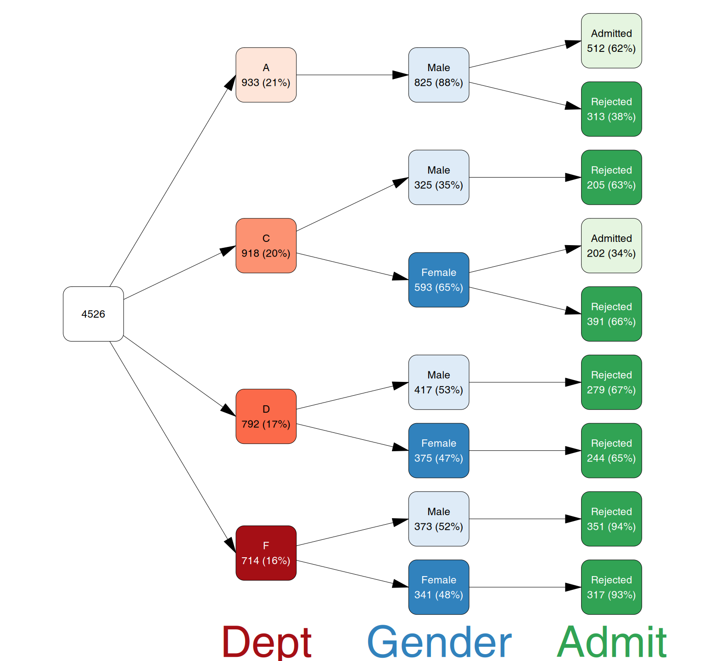
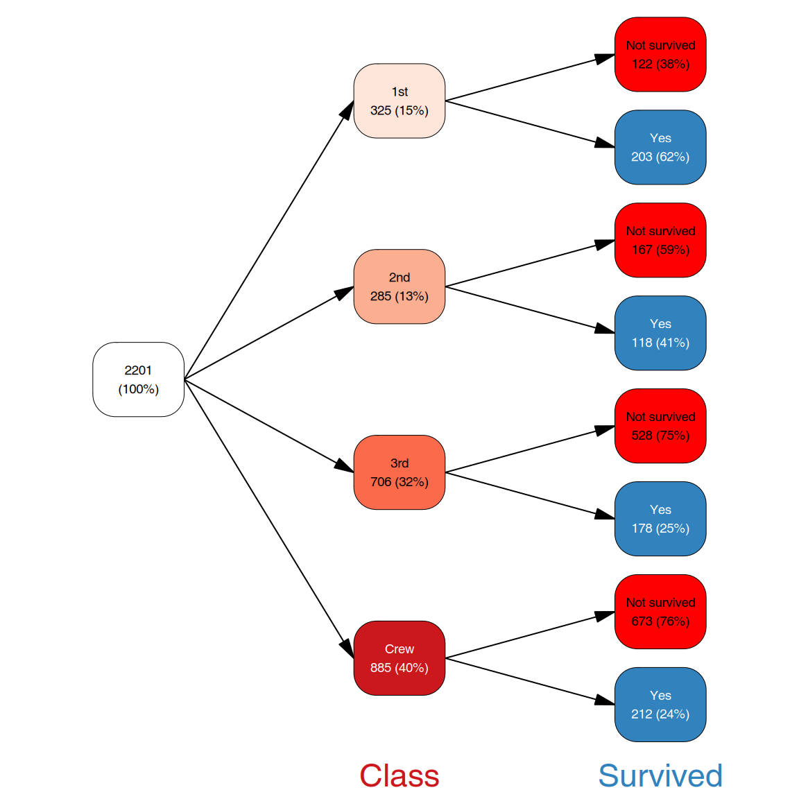
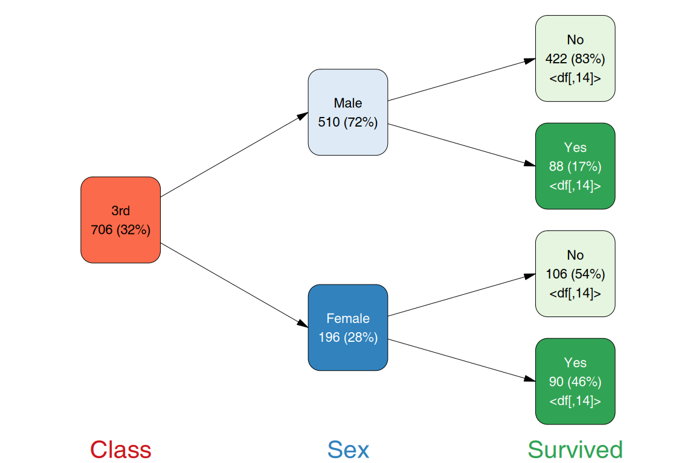

Conditional frequencies, tree diagrams and Sankey plots for categorical data, inspired by the original vtree package by Nick Barrowman.
Installation
You can install the development version of vtree2 like so:
pak::pak("january3/vtree2")vtree2 workflow
- Prepare the data with
vtree()orvtree_from_freqtable(). After this step, the data is immutable, frequencies and counts calculated will not change any more. - Prune the tree for visualization with
prune()orretain(). - Add variable and variable level aliases with
add_aliases(). - Add labels and colors with
add_labels()andadd_palette()or by directly manipulating thelabel,colorandfillcolumns of the vtree object.find_nodes()andprune(..., mark_only = TRUE)can be used to select nodes for coloring or labeling. Thesummarize_by_node()function can be used to produce additional per-node summaries which can be used for labeling or coloring. - plot the tree with
plot().
Basic plots
You can construct a vtree roughly from two types of data:
- a data frame with one row per case (cases data frame)
- a data frame with one row per combination of factor levels, and a frequency column (frequency table)
While the former ones are common in the wild, the builtin R examples are often the latter. The following example shows how to construct a vtree from a frequency table and plot it with vtree2.
library(vtree2)
tdf <- cases_from_freqtable(Titanic)
vt <- vtree(tdf, Class, Sex, Survived)
vt
#> vtree object with 3 variables and 2201 observations
#> Variables: Class, Sex, Survived
#> Frequencies computed as valid percentages (vp == TRUE)
#> Overview:
#> # Tibble (class tbl_df) 6 x 29:
#> # (Showing rows 1 - 20 out of 29)
#> │path │n │freq │tot_n│missing│denom
#> 1│root │ 2201│1.000│ 2201│ NA│ 2201
#> 2│Class:1st │ 325│0.148│ 2201│ 0│ 2201
#> 3│Class:2nd │ 285│0.129│ 2201│ 0│ 2201
#> 4│Class:3rd │ 706│0.321│ 2201│ 0│ 2201
#> 5│Class:Crew │ 885│0.402│ 2201│ 0│ 2201
#> 6│Class:1st/Sex:Male │ 180│0.554│ 325│ 0│ 325
#> 7│Class:1st/Sex:Female │ 145│0.446│ 325│ 0│ 325
#> 8│Class:2nd/Sex:Male │ 179│0.628│ 285│ 0│ 285
#> 9│Class:2nd/Sex:Female │ 106│0.372│ 285│ 0│ 285
#> 10│Class:3rd/Sex:Male │ 510│0.722│ 706│ 0│ 706
#> 11│Class:3rd/Sex:Female │ 196│0.278│ 706│ 0│ 706
#> 12│Class:Crew/Sex:Male │ 862│0.974│ 885│ 0│ 885
#> 13│Class:Crew/Sex:Female │ 23│0.026│ 885│ 0│ 885
#> 14│Class:1st/Sex:Male/Survived:No │ 118│0.656│ 180│ 0│ 180
#> 15│Class:1st/Sex:Male/Survived:Yes │ 62│0.344│ 180│ 0│ 180
#> 16│Class:1st/Sex:Female/Survived:No │ 4│0.028│ 145│ 0│ 145
#> 17│Class:1st/Sex:Female/Survived:Yes│ 141│0.972│ 145│ 0│ 145
#> 18│Class:2nd/Sex:Male/Survived:No │ 154│0.860│ 179│ 0│ 179
#> 19│Class:2nd/Sex:Male/Survived:Yes │ 25│0.140│ 179│ 0│ 179
#> 20│Class:2nd/Sex:Female/Survived:No │ 13│0.123│ 106│ 0│ 106vt is now an object of class vtree, which is basically tidygraph’s tbl_graph with some extra attributes. You can plot it with plot():

There is more: trees can be oriented vertically or horizontally, top to bottom, bottom to top, left to right, right to left; labels and colors can be freely customized, trees can be pruned for display.
Vtree pruning
With the prune() function, you can find nodes which fullfill a certain condition and remove them (along with their children) from the vtree:
ucb <- cases_from_freqtable(UCBAdmissions)
vt <- vtree(ucb, Dept, Gender, Admit) |>
prune(n < 150 | freq < .15)
plot(vt)
There is more: with find_nodes() you can find nodes which fullfill a certain condition. The produced mask (a simple logical vector) can be used to select nodes for changing labels or colors. With retain(), you can select the nodes you want to keep and remove other nodes.
Labelling and colors
While colors and labels can be generated automatically, it is possible to customize them by modifying the label and fill columns of the vtree object:
vt <- vtree(tdf, Class, Survived)
vt <- vt |> add_labels() |> # add default labels
add_palette() |>
mutate(label = gsub("No", "Not survived", label)) |>
mutate(fill = ifelse(node_col == "Survived" & node_val == "No",
"red", fill))
plot(vt)
There is more: add_labels() is highly customizable and you can produce complex labels with a simple R expression using sprintf() or glue(). You can also add display names (aliases) for variables and their values with add_aliases().
Summaries
The tree can be used to produce per-node summaries of any data. For example, if you have an additional variable for your cases, you can add summary of the values as labels to the nodes. We select here only one node (1st Class), just to zoom in on that part of the graph. You can also select the nodes for which you want to manipulate the label, for example with mark():
vt <- vtree(tdf, Class, Sex, Survived)
sm_txt <- summarize_by_node(tdf, vt, Age) |>
as_label()
vt |>
add_labels() |>
# only for the leaf nodes. leaf is a column in the vt nodes data frame
# which contains TRUE for leafs and FALSE for other nodes
mutate(label = ifelse(leaf,
paste0(label, "\n", sm_txt),
label)) |>
retain(path == "Class:3rd") |>
plot(show_root = FALSE)
There is more: summarize_by_node() can be used to calculate any summary of categorical or continuous variables as a character vector which can be then used as labels for the nodes. It produces a data frame with per-node summary statistics (different for categorical and continuous variables) which can be used for further analysis.
AI disclosure
I have not used LLMs directly in writing the code or documentation. However, I did use an LLM based chat to discuss some of the design issues (e.g. to compare existing packages for graph representation). Also, for code review / bug finding.
TODO/PROBLEMS
- write a manual in the main vignette [——–|] 95% complete
- add label text alignments left/right/center - how?
- add condition argument to add_label? like with grob? or replace the mask arg with a condition? actually, a condition also understands a mask, right? maybe add_labels, add_grobs, add_aliases should have a uniform interface wr to condition/mask
- write a developers vignette
- vtree_apply is incredibly powerful and should be highlighted separately. It allows conditional analyses of the data. Maybe a separate vignette on how to conditionally analyse data with vtrees and vtree_apply.
- add background and line color -> maybe add_theme()?
-
add_gs()for graphical summaries - tiny plots - vtree constructors take only character or factor variables:
build in checking for column typemaybe add functions to convert numeric to factor? or some automation controlled with a param? - add_layout should not modify shape if present
- faster processing of cases into trees
- ✔
proper Sankey plots - ✔
adding grobs explicitly withadd_grobs(); grobs should have layout parameters. - ✔
allow adjusting grob layouts in grob nodes- only fine adjusting - ✔
the nodes of the diagrammer are adjusted to the size of the labels. We could do that, actually. I think it doesn’t look so good, but OK.- now “tight” layouts why is plotting patterns so slow?- ✔
easier formatting of labels using glue syntax - ✔
summaries_vt and summaries_vt_df - that is clunky, maybe as_df option or smth? -> rewrote it completely - ✔
better support in add_palette for 1/ variable driven palettes (i.e. one color for one tree level / variable of the tree, deterministic such that colors don’t change if we prune a tree) 2/ fully customized palettes - ✔
original vtree tries to keep sister NA nodes of the retained nodes. This behavior is reproduced by the keep_na_sisters parameter, which adds NA nodes to the retained nodes. However, if we target an NA node with is.na(), then the behavior results in the NA node being kept. - ✔
sameline template for add_labels() - ✔
fix the mess around legend param - ✔
vtree constructors should check for presence of ‘/’ and ‘:’ in variable names - ✔
vtree constructors should check that all columns are factors or characters - ✔
vtree constructors should test for the presence of structural columns in the data. e.g. if the data has already a column called “n” or “freq”, we will have a clash when pruning and virtual columns are created. - ✔
print.vtree should show the status of added layouts / colors / etc etc - ✔
pruning:streamline and clean up pruning / selecting nodes-
remove mark_only parameter, enough to have “mark()”-> nah, it is useful for debugging -
unexport find_parents / find_children-> nah, they might be useful remove the na.rm tag
- ✔
the arrows should be attached dynamically in grob.R rather than in layout? -> nah, let us keep low-level graphics and high-level layouts separate while we can - ✔
add prefix and suffix parameters to add_labels, to make the handling easier- nah, you can just paste() it. - ✔
how is vtree actually handling the palettes? - ✔
root node should not show percentages on default labels - ✔
make sure that node_name is used for displaying variable names - ✔
plotting function for patterns - ✔
varspace and varsize should work with layouts other than regular - ✔
add the keep_children parameter to the keep() function,and also keep_na. - this is harder; because not all the NA nodes are kept, but only these which are on the same level as a node that is kept. Generally make keep behave the same as in vtree. - ✔
legends - ✔
should the vtree() function take cases or samples? Maybe instead of vtree_from_freqtable, we can just use vtree(…, .freq_col=“Freq”) or something like this.nah, better make it explicit. - ✔
maybe gridtext for the labels so we can use some basic formatting - questions to N:
- which NA nodes are kept when vp=TRUE, only the sisters or all on the same level?
- what does
keep=list(eligible="Eligible",randomized="Randomized",followup="Followed up")precisely mean? How does it differ from keep=list(followup=“Followed up”)?
BUGS
- ✔
incorrect warning when running plot(add_layout(vt, dir=“tb”)) because plot sets default dir to lr, and then is surprised that the layout already has a different dir - ✔
if alias columns are not present, add_labels ignores aliases attached to the object. This is an issue for patterns. add_labels should check not only the columns, but also get_aliases(vtree) - ✔
plot(pattern, legend=TRUE) does not work, b/c summaries do not contain the virtual node “pattern” - ✔
plot(pattern, legend=“tiny”) does not work either, but does not throw an error. (the colors of the titles were set to background) - ✔
vertical layouts do not work with Sankey connectors - ✔
padding doesn’t work for adaptive fonts (layout=“prop”) (cannot reproduce) - ✔
weird: compareplot_vtree(vt2, layout="tight", lwidth=1, lheight=1, padding=.10, dir="bt")withplot_vtree(vt2, layout="tight", lwidth=1, padding=.10, dir="bt")- why are fonts on the second one smaller? - problem with padding, it increases when nodes increase legend titles sometimes overlap with the legend- ✔
check the graphic summary example. if dir is tb, it looks ok (fonts maybe slightly too large). But turn it around and the fonts on the grob nodes are unreadable. Why? - ✔
aliases are ignored for the legend. Maybe aliases should behave like palettes, i.e. also set an attribute to be used by legend? - ✔
“Missing” is missing from the legend on the user guide example for adding aliases - ✔
if some variables disappear from the plot, the legend throws an error - ✔
prune(!Severity %in% c(“Mild”, “Moderate”), follow_only = TRUE) does not work - ✔
na.rm handling in prune() is not consistent, at least not with vtree’s behavior - ✔
layout=“proportional” stopped working - ✔
with precomputed layout, plot doesn’t know that the direction is vertical and the legends suck -> should the legends be computed by the layout function? naaaah. layout should store the attributes via an exported function. Should we make an S3 class? vtree_layout?